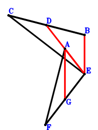
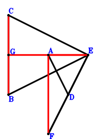
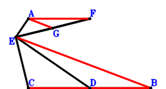
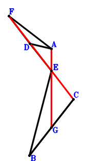
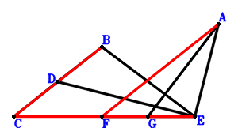

Exercise 4： Let D, G be the midpoints of CB, FE, respectively. CB⊥FA and CE⊥EF. Given that D, A, E are collinear and AG//BE, prove that \(AE·DE=AG·BE\).

\(\because \) D is the midpoint of CB \(\therefore \small\overrightarrow{ED}=\dfrac{\small\overrightarrow{EB}}{2} + \dfrac{\small\overrightarrow{EC}}{2}\).\(\because \) G is the midpoint of FE \(\therefore \small\overrightarrow{EG}=\dfrac{\small\overrightarrow{EF}}{2}\).\(\because \) CE⊥EF \(\therefore \small\overrightarrow{EC} \cdot \small\overrightarrow{EF}=0\) . . . . . . \(①\)\(\because \) CB⊥FA \(\therefore \small\overrightarrow{AF} \cdot \small\overrightarrow{CB}=\left(- \small\overrightarrow{EA} + \small\overrightarrow{EF}\right) \cdot \left(\small\overrightarrow{EB} - \small\overrightarrow{EC}\right)=- \small\overrightarrow{EA} \cdot \small\overrightarrow{EB} + \small\overrightarrow{EA} \cdot \small\overrightarrow{EC} + \small\overrightarrow{EB} \cdot \small\overrightarrow{EF} - \small\overrightarrow{EC} \cdot \small\overrightarrow{EF}=0\) . . . . . . \(②\)In conclusion, \(- \small\overrightarrow{EA} \cdot \small\overrightarrow{ED} + \small\overrightarrow{EB} \cdot \small\overrightarrow{GA}=- \small\overrightarrow{EA} \cdot \small\overrightarrow{ED} + \small\overrightarrow{EB} \cdot \left(\small\overrightarrow{EA} - \small\overrightarrow{EG}\right)=- \small\overrightarrow{EA} \cdot \left(\dfrac{\small\overrightarrow{EB}}{2} + \dfrac{\small\overrightarrow{EC}}{2}\right) + \small\overrightarrow{EB} \cdot \left(\small\overrightarrow{EA} - \dfrac{\small\overrightarrow{EF}}{2}\right)=\dfrac{\small\overrightarrow{EA} \cdot \small\overrightarrow{EB}}{2} - \dfrac{\small\overrightarrow{EA} \cdot \small\overrightarrow{EC}}{2} - \dfrac{\small\overrightarrow{EB} \cdot \small\overrightarrow{EF}}{2}=-1/2\cdot①-1/2\cdot②=0\)\(\because\) D, A, E are collinear and AG//BE \(\therefore\) \(AE·DE=AG·BE\).
Exercise 5： Let D, G be the midpoints of FE, CB, respectively. AD⊥BE and CE⊥EF. Given that G, A, E are collinear and CB//AF, prove that \(AF·CB=2·AE·GE\).

\(\because \) D is the midpoint of FE \(\therefore \small\overrightarrow{ED}=\dfrac{\small\overrightarrow{EF}}{2}\).\(\because \) G is the midpoint of CB \(\therefore \small\overrightarrow{EG}=\dfrac{\small\overrightarrow{EB}}{2} + \dfrac{\small\overrightarrow{EC}}{2}\).\(\because \) CE⊥EF \(\therefore \small\overrightarrow{EC} \cdot \small\overrightarrow{EF}=0\) . . . . . . \(①\)\(\because \) AD⊥BE \(\therefore \small\overrightarrow{DA} \cdot \small\overrightarrow{EB}=\small\overrightarrow{EB} \cdot \left(\small\overrightarrow{EA} - \small\overrightarrow{ED}\right)=\small\overrightarrow{EB} \cdot \left(\small\overrightarrow{EA} - \dfrac{\small\overrightarrow{EF}}{2}\right)=\small\overrightarrow{EA} \cdot \small\overrightarrow{EB} - \dfrac{\small\overrightarrow{EB} \cdot \small\overrightarrow{EF}}{2}=0\) . . . . . . \(②\)In conclusion, \(\small\overrightarrow{AF} \cdot \small\overrightarrow{CB} - 2 \small\overrightarrow{EA} \cdot \small\overrightarrow{EG}=- 2 \small\overrightarrow{EA} \cdot \small\overrightarrow{EG} + \left(- \small\overrightarrow{EA} + \small\overrightarrow{EF}\right) \cdot \left(\small\overrightarrow{EB} - \small\overrightarrow{EC}\right)=- 2 \small\overrightarrow{EA} \cdot \left(\dfrac{\small\overrightarrow{EB}}{2} + \dfrac{\small\overrightarrow{EC}}{2}\right) + \left(- \small\overrightarrow{EA} + \small\overrightarrow{EF}\right) \cdot \left(\small\overrightarrow{EB} - \small\overrightarrow{EC}\right)=- 2 \small\overrightarrow{EA} \cdot \small\overrightarrow{EB} + \small\overrightarrow{EB} \cdot \small\overrightarrow{EF} - \small\overrightarrow{EC} \cdot \small\overrightarrow{EF}=-①-2\cdot②=0\)\(\because\) G, A, E are collinear and CB//AF \(\therefore\) \(AF·CB=2·AE·GE\).
Exercise 6： Let G, D be the midpoints of FE, BC, respectively. AE⊥ED and FE⊥EC. Given that BC//AF and AG//BE, prove that \(AF·BC=2·AG·BE\).

\(\because \) D is the midpoint of BC \(\therefore \small\overrightarrow{ED}=\dfrac{\small\overrightarrow{EB}}{2} + \dfrac{\small\overrightarrow{EC}}{2}\).\(\because \) G is the midpoint of FE \(\therefore \small\overrightarrow{EG}=\dfrac{\small\overrightarrow{EF}}{2}\).\(\because \) FE⊥EC \(\therefore \small\overrightarrow{EC} \cdot \small\overrightarrow{EF}=0\) . . . . . . \(①\)\(\because \) AE⊥ED \(\therefore \small\overrightarrow{EA} \cdot \small\overrightarrow{ED}=\small\overrightarrow{EA} \cdot \left(\dfrac{\small\overrightarrow{EB}}{2} + \dfrac{\small\overrightarrow{EC}}{2}\right)=\dfrac{\small\overrightarrow{EA} \cdot \small\overrightarrow{EB}}{2} + \dfrac{\small\overrightarrow{EA} \cdot \small\overrightarrow{EC}}{2}=0\) . . . . . . \(②\)In conclusion, \(\small\overrightarrow{AF} \cdot \small\overrightarrow{CB} + 2 \small\overrightarrow{EB} \cdot \small\overrightarrow{GA}=2 \small\overrightarrow{EB} \cdot \left(\small\overrightarrow{EA} - \small\overrightarrow{EG}\right) + \left(- \small\overrightarrow{EA} + \small\overrightarrow{EF}\right) \cdot \left(\small\overrightarrow{EB} - \small\overrightarrow{EC}\right)=2 \small\overrightarrow{EB} \cdot \left(\small\overrightarrow{EA} - \dfrac{\small\overrightarrow{EF}}{2}\right) + \left(- \small\overrightarrow{EA} + \small\overrightarrow{EF}\right) \cdot \left(\small\overrightarrow{EB} - \small\overrightarrow{EC}\right)=\small\overrightarrow{EA} \cdot \small\overrightarrow{EB} + \small\overrightarrow{EA} \cdot \small\overrightarrow{EC} - \small\overrightarrow{EC} \cdot \small\overrightarrow{EF}=-①+2\cdot②=0\)\(\because\) BC//AF and AG//BE \(\therefore\) \(AF·BC=2·AG·BE\).
Exercise 7： Let D, G be the midpoints of FE, BC, respectively. DA⊥BE and BC⊥FA. Given that F, C, E are collinear and A, G, E are collinear, prove that CE\(\cdot\)FE=2\(\cdot\)AE\(\cdot\)GE.

\(\because \) D is the midpoint of FE \(\therefore \small\overrightarrow{ED}=\dfrac{\small\overrightarrow{EF}}{2}\).\(\because \) G is the midpoint of BC \(\therefore \small\overrightarrow{EG}=\dfrac{\small\overrightarrow{EB}}{2} + \dfrac{\small\overrightarrow{EC}}{2}\).\(\because \) DA⊥BE \(\therefore \small\overrightarrow{DA} \cdot \small\overrightarrow{EB}=\small\overrightarrow{EB} \cdot \left(\small\overrightarrow{EA} - \small\overrightarrow{ED}\right)=\small\overrightarrow{EB} \cdot \left(\small\overrightarrow{EA} - \dfrac{\small\overrightarrow{EF}}{2}\right)=\small\overrightarrow{EA} \cdot \small\overrightarrow{EB} - \dfrac{\small\overrightarrow{EB} \cdot \small\overrightarrow{EF}}{2}=0\) . . . . . . \(①\)\(\because \) BC⊥FA \(\therefore \small\overrightarrow{AF} \cdot \small\overrightarrow{CB}=\left(- \small\overrightarrow{EA} + \small\overrightarrow{EF}\right) \cdot \left(\small\overrightarrow{EB} - \small\overrightarrow{EC}\right)=- \small\overrightarrow{EA} \cdot \small\overrightarrow{EB} + \small\overrightarrow{EA} \cdot \small\overrightarrow{EC} + \small\overrightarrow{EB} \cdot \small\overrightarrow{EF} - \small\overrightarrow{EC} \cdot \small\overrightarrow{EF}=0\) . . . . . . \(②\)In conclusion, \(- 2 \small\overrightarrow{EA} \cdot \small\overrightarrow{EG} + \small\overrightarrow{EC} \cdot \small\overrightarrow{EF}=- 2 \small\overrightarrow{EA} \cdot \left(\dfrac{\small\overrightarrow{EB}}{2} + \dfrac{\small\overrightarrow{EC}}{2}\right) + \small\overrightarrow{EC} \cdot \small\overrightarrow{EF}=- \small\overrightarrow{EA} \cdot \small\overrightarrow{EB} - \small\overrightarrow{EA} \cdot \small\overrightarrow{EC} + \small\overrightarrow{EC} \cdot \small\overrightarrow{EF}=-2\cdot①-②=0\)\(\because\) F, C, E are collinear and A, G, E are collinear \(\therefore\) CE\(\cdot\)FE=2\(\cdot\)AE\(\cdot\)GE.
Exercise 9： Let D, G be the midpoints of CB, FE, respectively. GA⊥BE and DE⊥EA. Given that C, F, E are collinear and CB//FA, prove that \(CE·FE=CB·FA\).

\(\because \) D is the midpoint of CB \(\therefore \small\overrightarrow{ED}=\dfrac{\small\overrightarrow{EB}}{2} + \dfrac{\small\overrightarrow{EC}}{2}\).\(\because \) G is the midpoint of FE \(\therefore \small\overrightarrow{EG}=\dfrac{\small\overrightarrow{EF}}{2}\).\(\because \) DE⊥EA \(\therefore \small\overrightarrow{EA} \cdot \small\overrightarrow{ED}=\small\overrightarrow{EA} \cdot \left(\dfrac{\small\overrightarrow{EB}}{2} + \dfrac{\small\overrightarrow{EC}}{2}\right)=\dfrac{\small\overrightarrow{EA} \cdot \small\overrightarrow{EB}}{2} + \dfrac{\small\overrightarrow{EA} \cdot \small\overrightarrow{EC}}{2}=0\) . . . . . . \(①\)\(\because \) GA⊥BE \(\therefore \small\overrightarrow{EB} \cdot \small\overrightarrow{GA}=\small\overrightarrow{EB} \cdot \left(\small\overrightarrow{EA} - \small\overrightarrow{EG}\right)=\small\overrightarrow{EB} \cdot \left(\small\overrightarrow{EA} - \dfrac{\small\overrightarrow{EF}}{2}\right)=\small\overrightarrow{EA} \cdot \small\overrightarrow{EB} - \dfrac{\small\overrightarrow{EB} \cdot \small\overrightarrow{EF}}{2}=0\) . . . . . . \(②\)In conclusion, \(\small\overrightarrow{AF} \cdot \small\overrightarrow{CB} + \small\overrightarrow{EC} \cdot \small\overrightarrow{EF}=\small\overrightarrow{EC} \cdot \small\overrightarrow{EF} + \left(- \small\overrightarrow{EA} + \small\overrightarrow{EF}\right) \cdot \left(\small\overrightarrow{EB} - \small\overrightarrow{EC}\right)=- \small\overrightarrow{EA} \cdot \small\overrightarrow{EB} + \small\overrightarrow{EA} \cdot \small\overrightarrow{EC} + \small\overrightarrow{EB} \cdot \small\overrightarrow{EF}=2\cdot①-2\cdot②=0\)\(\because\) C, F, E are collinear and CB//FA \(\therefore\) \(CE·FE=CB·FA\).